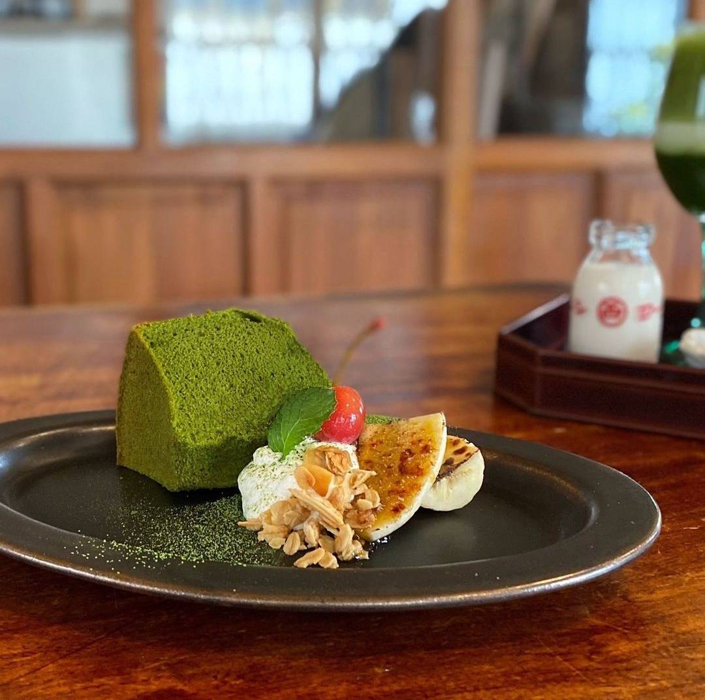
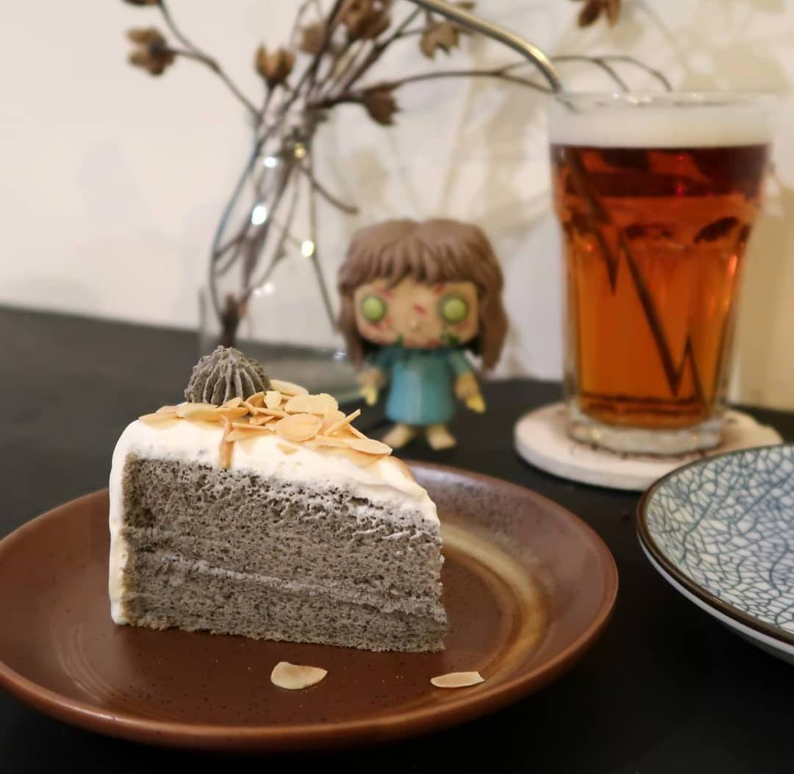

圖片
標題
說明
島鹿•喫茶
點上一壺抹茶，配上店內的招牌【小山園抹茶戚風】，彷彿一秒飛到日本!

於是麵包
不加任何一滴水烘焙而成，吃起來少了一般甜甜圈的油膩感，
而多了股淡淡地瓜的自然甘甜
核桃腦袋
中間夾著香味滿滿的芝麻奶油，點綴的杏仁片讓口感層次更加豐富，
一吃下去，帶有鮮奶油的濕潤度與芝麻香在口中散開來!
圖片 |
標題 |
說明 |
|---|---|---|
|  | 島鹿•喫茶 |
一走進到店裡，讓人瞬間以為走入了不同時空，台灣老宅結合日式風格非常特別， 點上一壺抹茶，配上店內的招牌【小山園抹茶戚風】，彷彿一秒飛到日本! |
|
於是麵包 |
招牌【地瓜鮮奶甜甜圈】最大的特色就是在麵糰裡加入地瓜和鮮奶， 不加任何一滴水烘焙而成，吃起來少了一般甜甜圈的油膩感， 而多了股淡淡地瓜的自然甘甜 |
 | 核桃腦袋 |
店家招牌【黑芝麻戚風】，柔軟帶著彈性的戚風蛋糕體， 中間夾著香味滿滿的芝麻奶油，點綴的杏仁片讓口感層次更加豐富， 一吃下去，帶有鮮奶油的濕潤度與芝麻香在口中散開來! |